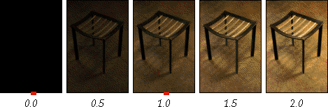
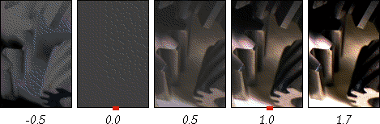
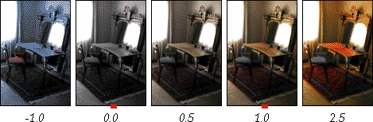
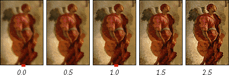
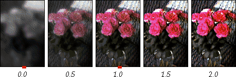

This page is a copy of http://www.sgi.com/grafica/interp/ on April 17, 2003, with some slight formatting changes, included in the Netpbm documentation for convenience.
Interpolation and extrapolation between two images offers a general, unifying approach to many common point and area image processing operations. Brightness, contrast, saturation, tint, and sharpness can all be controlled with one formula, separately or simultaneously. In several cases, there are also performance benefits.
Linear interpolation is often used to blend two images. Blend fractions (alpha) and (1 - alpha) are used in a weighted average of each component of each pixel:
out = (1 - alpha)*in0 + alpha*in1
Typically alpha is a number in the range 0.0 to 1.0. This is commonly used to linearly interpolate two images. What is less often considered is that alpha may range beyond the interval 0.0 to 1.0. Values above one subtract a portion of in0 while scaling in1. Values below 0.0 have the opposite effect.
Extrapolation is particularly useful if a degenerate version of the image is used as the image to get "away from." Extrapolating away from a black-and-white image increases saturation. Extrapolating away from a blurred image increases sharpness. The interpolation/extrapolation formula offers one-parameter control, making display of a series of images, each differing in brightness, contrast, sharpness, color, or saturation, particularly easy to compute, and inviting hardware acceleration.
In the following examples, a single alpha value is used per image. However other processing is possible, for example where alpha is a function of X and Y, or where a brush footprint controls alpha near the cursor.
To control image brightness, we use pure black as the degenerate (zero alpha) image. Interpolation darkens the image, and extrapolation brightens it. In both cases, brighter pixels are affected more. 
Contrast can be controlled using a constant gray image with the average image luminance. Interpolation reduces contrast and extrapolation boosts it. Negative alpha generates inverted images with varying contrast. In all cases, the average image luminance is constant. 
If middle gray or the average pixel color is used instead, contrast is again altered, but with middle gray or the average color left unaffected. Shades and colors far away from the chosen value are most affected.
To alter saturation, pixel components must move towards or away from the pixel's luminance value. By using a black-and-white image as the degenerate version, saturation can be decreased using interpolation, and increased using extrapolation. This avoids computationally more expensive conversions to and from HSV space. Repeated update in an interactive application is especially fast, since the luminance of each pixel need not be recomputed. Negative alpha preserves luminance but inverts the hue of the input image. 
Any convolution, such as sharpening or blurring, can be adjusted by this approach. If a blurred image is used as the degenerate image, interpolation attenuates high frequencies to varying degrees, and extrapolation boosts them, sharpening the image by unsharp masking. Varying alpha acts as a kernel scale factor, so a series of convolutions differing only in scale can be done easily, independent of the size of the kernel. Since blurring, unlike sharpening, is often a separable operation, sharpening by extrapolation may be far more efficient for large kernels. 
Note that global contrast control, local contrast control, and sharpening form a continuum. Global contrast pushes pixel components towards or away from the average image luminance. Local contrast is similar, but uses local area luminance. Unsharp masking is the extreme case, using only the color of nearby pixels.
An unusual property of this interpolation/extrapolation approach is that all of these image parameters may be altered simultaneously. Here sharpness, tint, and saturation are all altered. 
Image applications frequently need to produce multiple degrees of manipulation interactively. Image applications frequently need to interactively manipulate an image by continuously changing a single parameter. The best hardware mechanisms employ a single "inner loop" to achieve a wide variety of effects. Interpolation and extrapolation of images can be a unifying approach, providing a single function that supports many common image processing operations.
Since a degenerate image is sometimes easier to calculate, extrapolation may offer a more efficient method to achieve effects such as sharpening or saturation. Blending is a linear operation, and so it must be performed in linear, not gamma-warped space. Component range must also be monitored, since clamping, especially of the degenerate image, causes inaccuracy.
These image manipulation techniques can be used in paint programs to easily implement brushes that saturate, sharpen, lighten, darken, or modify contrast and color. The only major change needed is to support alpha values outside the range 0.0 to 1.0.
It is surprising and unfortunate how many graphics software packages needlessly limit interpolant values to the range 0.0 to 1.0. Application developers should allow users to extrapolate parameters when practical.
For a slightly extended version of this article, see:
P. Haeberli and D. Voorhies. Image Processing by Linear
Interpolation and Extrapolation.
IRIS Universe Magazine No. 28, Silicon Graphics, Aug, 1994.